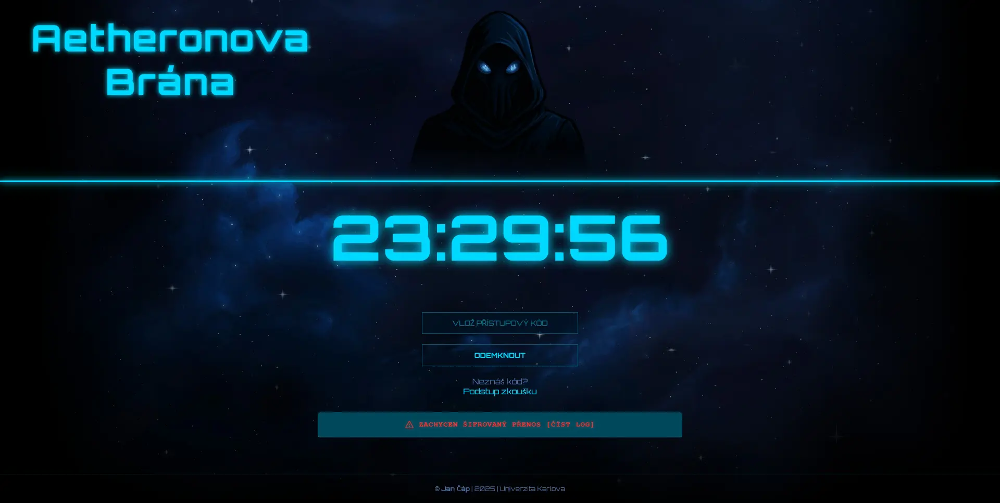
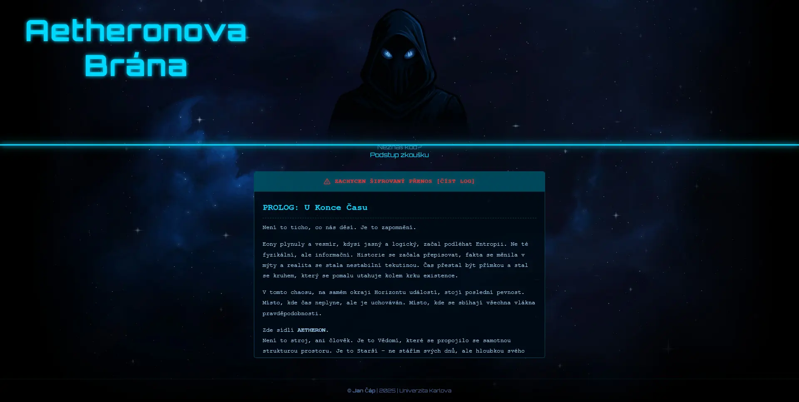
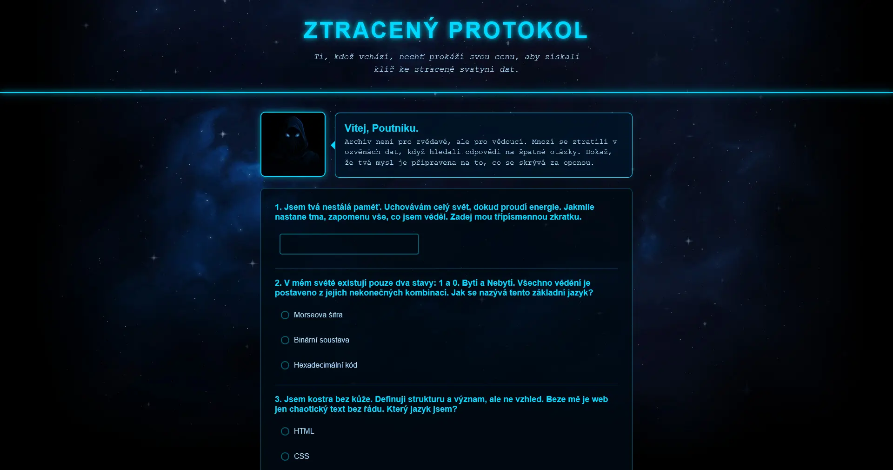
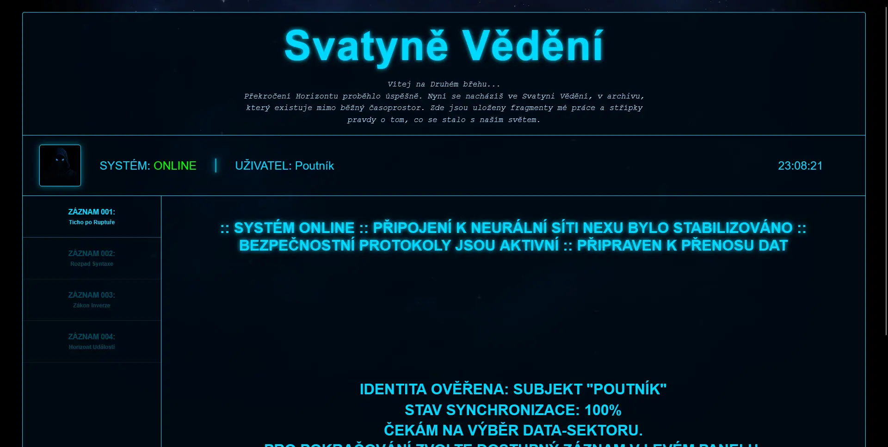
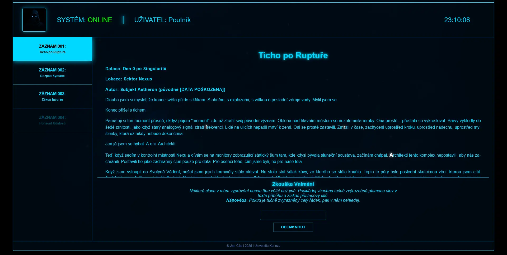

Datum
2025/26
Původně zápočtový projekt, který se vyvinul v úvodní fázi ARG (Alternate Reality Game). Interaktivní sci-fi terminál kombinující logické hádanky, příběhový lore a skryté herní mechaniky.

Datum
2025/26
Kategorie
Vývoj Webu / ARG Design
Technologie
HTML, CSS, JavaScript
URL
Aetheronova Brána vznikla jako projekt do předmětu Tvorba webu. Místo běžné statické stránky jsem vytvořil interaktivní rozhraní, které slouží jako vstup do "Svatyně Vědění". Cílem bylo vytvořit web, který návštěvníka nepustí dál jen tak, ale vyžaduje interakci, čímž ho vtáhne do děje.
Jádrem projektu je systém zkoušek. Návštěvník musí zodpovědět sérii otázek – kombinaci hádanek a odbornějších IT dotazů. Správné odpovědi vedou k získání přístupového hesla, které následně odemkne hlavní část webu s příběhovými záznamy. Projekt je koncipován tak, aby se do něj daly v budoucnu přidávat další kapitoly.




Projekt stojí na HTML a CSS bez externích frameworků. Vizuální stránka využívá specifickou paletu barev, font Orbitron a "glitch" efekty pro navození atmosféry sci-fi rozhraní. Důraz byl kladen na to, aby design působil jako konzistentní systém, nikoliv jako běžná webová stránka.
Přestože web nemá klasický backend, chová se dynamicky díky vanilkovému JavaScriptu. Ten zpracovává vstupy z terminálu, validuje hesla a řídí herní logiku. Pro uchování postupu hráče (aby nemusel luštit znovu) jsem implementoval práci s Local Storage.
Vývoj probíhal lokálně ve VS Code. Musel jsem vyřešit správnou strukturu souborů a naučit se pracovat s relativními cestami, aby web fungoval stejně u mě na disku i na školním serveru. Pro nahrávání jsem nakonfiguroval SFTP synchronizaci, což mi výrazně zrychlilo práci oproti ručnímu kopírování.
Na tomto projektu jsem se nejvíce zdokonalil v propojení HTML a JavaScriptu. Naučil jsem se, jak pomocí JS "sáhnout" do stránky, vybrat konkrétní element podle ID nebo třídy, přečíst jeho hodnotu a následně dynamicky změnit obsah nebo styl stránky podle toho, co uživatel udělal.
Byla to pro mě velká škola v tom, jak proměnit nápad ve funkční celek. Zjistil jsem, že i zdánlivě jednoduchá věc, jako je ověření hesla, vyžaduje pečlivé ošetření podmínek v kódu. Projekt mě naučil přemýšlet nad strukturou webu logicky, ne jen vizuálně.